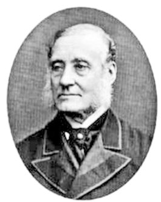
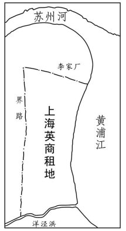

绪论
第 1—7 页（PDF 12—18 页）
绪论要解决的问题是：租界这种外国人居留区域在中国是否前无所承。作者追溯自西汉至清前期中国政府设置或认可的外国人聚居区，主线是论证古代中国从未出现如同“独立王国”的居留区域，从而为租界之出现立下历史参照。
作者指出，外国人在通都大埠集中居住符合中、外双方利益：他们来到语言、习俗、宗教皆异的异乡，出于便于生活、贸易和自卫的需要，通常愿意聚居一处；历代中国政府也常常要求他们集中居住，以便防范和管理。最早见于记载的是西汉长安的藁街蛮夷邸，它在汉元帝建昭三年即公元前 36 年之前已经存在。张骞打通中原与西域的交通后，西域各国使臣、商民经“丝绸之路”进入长安；其首级常被传诣京师在此悬挂示众，“以示万里，明犯强汉者，虽远必诛”。东汉沿袭旧制，也在京师洛阳建造蛮夷邸。
北魏在洛阳南郊为四方“夷人”建临时侨居的“四馆”和长期定居的“四里”，坐落在永桥以南、圜丘以北，伊水与洛水之间。“吴人”处金陵馆，三年后赐宅归正里，因“吴人”属南方南朝汉族人士，归正里并非外国人居留区域；“西夷”处崦嵫馆，赐宅慕义里。据《洛阳伽蓝记》记载，当时“附化之民，万有余家”，北魏还别设市场，号称“四通市”。
此后唐代的长安、扬州、广州，宋代与广州并驾齐驱的通商口岸泉州，元代的大都北京等地都形成外国人聚居区；元、明、清三代均设会同馆。明、清更替之际，抗清的台湾郑氏政权曾允准英国商人在台湾、厦门、定海设立“红毛馆”，未长期存在。大多居留区未实行特殊制度，与华人街区并无实质差异；特殊的只有两类：享有高度自治权的广州蕃坊与香山澳门，以及受苛刻约束的广州商馆。唐代入居广州的大食、波斯商民数以万计，到公元 9 世纪，广州城内今光塔街一带的蕃坊成为他们集中居留的区域，设有由中国皇帝从侨民中简任的蕃长，依《古兰经》管理坊内事务，至明代初期因厉行海禁而终结。
1553 年前后，葡萄牙人在澳门就船贸易，数年后因中国官员姑息而大兴土木，建成永久性居留区域。他们设立本国的议事局、海关、总督和王家法官，同时又向中国政府支付地租、商税，以中国皇帝“顺民”的身份居留、贸易。清政府设粤海关正税总口和香山县丞加以管理；直到鸦片战争结束后的 1849 年，中国政府仍在当地行使国家主权。广州商馆则受“防夷”章程的空前限制：外国人不得携带妻女和任何武器，随行人员不得超过五人，不得随意离开商馆。这一长约 1 100 英尺、宽约 700 英尺、共有商馆 13 所的区域，被当时的外国人称作“镀金的鸟笼”。
作者的论断是：古代中国从未出现如同“独立王国”的外国人居留区域。即使在唐、宋、元代的广州蕃坊和 1849 年前的澳门，外国人也只是取得高度的自治权，而没有取得属地的行政管理权，无权管辖入界的华人，其自治团体还受中国官府管理。租界则不同，它是界内华人反而要受外国人管治的特殊区域，此前史无前例。


本章要点
- 最早见于记载的外国人居留区是西汉长安藁街的蛮夷邸，公元前 36 年即汉元帝建昭三年之前已存在。
- 北魏洛阳南郊设“四馆”“四里”，西夷聚居的慕义里“附化之民，万有余家”，并别设“四通市”供贸易。
- 唐代广州蕃坊已成规模，设蕃长依《古兰经》管理；它延续 500 年，至明代初期因厉行海禁而终结。
- 澳门自 1553 年前后形成葡人永久居留区域，葡人设议事局、海关与总督，但向中国纳地租商税，至 1849 年中国仍在当地行使主权。
- 广州商馆共 13 所，长约 1 100 英尺、宽约 700 英尺，受“防夷”章程苛待，被外人称作“镀金的鸟笼”。
- 论断是古代中国从无“国中之国”：蕃坊与澳门仅有高度自治权，无属地行政管理权，首领由中国任命。
「表明在古代中国从未出现过如同“独立王国”的外国人居留区域。」
绪论，PDF 第 17 页
「允许坊内的外国侨⺠享有充分的自治权。」
绪论，PDF 第 14 页
「这一富丽堂皇的建筑群，其实是个“镀金的⻦笼”」
绪论，PDF 第 17 页